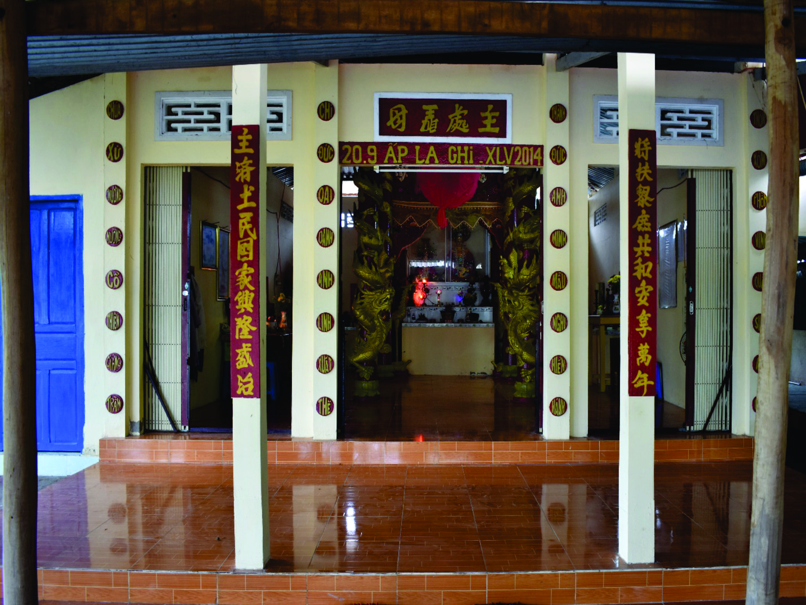

Di tích Miếu bà Chúa Xứ La Ghi tại ấp La Ghi, xã Long Vĩnh, huyện Duyên Hải, tỉnh Trà Vinh. Theo lời truyền kể, Miếu bà Chúa Xứ La Ghi được tạo dựng vào những thập niên giữa cuối thế kỷ XIX, ngôi miếu đơn sơ bằng cây lá. Đến năm 2014, nhân dân góp kinh phí xây dựng lại điện thờ kiên cố bằng xi măng cốt thép.
Miếu bà Chúa Xứ
Những năm đầu thế kỷ XX, Miếu bà Chúa Xứ La Ghi cũng là địa điểm hội họp của tổ chức Thiên Địa hội thường vào dịp cúng bà Chúa Xứ ngày 20/2 âm lịch, với các hoạt động chống Pháp, trừ gian diệt ác,…
Năm 1932, đồng chí Đỗ Xuân Quang (thầy giáo Sành) là đảng viên Chi bộ Mỹ Long được phân công về xã Long Vĩnh hoạt động và mượn miếu La Ghi để đồng chí Dương Hữu Thành (Hai Thành) tổ chức dạy học và tuyên truyền giác ngộ cách mạng cho nhân dân.
Ngày 04/9/1933, Chi bộ xã Long Vĩnh (lúc này thuộc Huyện ủy Cầu Ngang) được thành lập, là chi bộ Đảng đầu tiên của huyện Duyên Hải ngày nay, với 4 đảng viên gồm Đỗ Xuân Quang (thầy giáo Sành) – Bí thư chi bộ, Nguyễn Văn Cơ (Bảy Cơ) làm nghề thợ bạc, Nguyễn Văn Quí (thầy giáo Quí), Nguyễn Minh Nghị (con của Hương sự Nguyễn Văn Tám) và tiếp tục sử dụng miếu để làm nơi hội họp và trú ẩn cho cán bộ.
Tối ngày 22/8/1945, Huyện ủy Cầu Ngang cử đồng chí Ba Thê, Ba Ngượt về Long Vĩnh chủ trì chỉ đạo Chi bộ Long Vĩnh tổ chức một cuộc mít tinh quần chúng tại chợ Cái Đôi để biểu dương lực lượng và thăm dò phản ứng của bọn hội tề vào tối ngày 24/8/1945. Chớp lấy thời cơ Trà Vinh khởi nghĩa giành chính quyền, Chi bộ Long Vĩnh chủ động biến cuộc mít tinh thành cuộc tuần hành giành lại chính quyền về tay nhân dân vào sáng 25/8/1945.
Hưởng ứng lời kêu gọi Toàn quốc kháng chiến của Chủ tịch Hồ Chí Minh, Ủy ban kháng chiến xã Long Vĩnh lãnh đạo nhân dân địa phương và bà con trong Ban hội miếu nổi dậy giành chính quyền. Long Vĩnh là xã đầu tiên trên địa bàn Trà Vinh được giải phóng ngày 30/7/1946.
Đầu tháng 5/1961 đồng chí Trần Văn Long – Bí thư Tỉnh ủy Trà Vinh đến Duyên Hải chỉ đạo tổ chức đơn vị đặc biệt lo chuyên chở vũ khí từ miền Bắc vào vùng Duyên Hải và xây dựng bến tiếp nhận. Cụm Bến 1 thuộc khu vực vàm Rạch Cỏ, La Ghi nằm cách miếu 1,6km đã đón 4 chuyến an toàn.
Cuối năm 1962, đội văn nghệ xã là Đàn Chim Việt được thành lập ở La Ghi, tiền thân của Đoàn nghệ thuật cải lương Ánh Hồng sau này. Bà Dương Thị Ẩn, thành viên trong hội miếu đã tham gia đội.
Giai đoạn từ năm 1951 – 1964, căn cứ cách mạng của huyện ủy được xây dựng tại rừng thuộc ấp La Ghi, gồm có miếu La Ghi và các khu vực như rạch Cái Cỏ, từ mương Xẻo Vọp đến vàm Rạch Cỏ, Rạch Ngay, Tắc Ông Cụ. Miếu bà Chúa Xứ La Ghi còn là trụ sở của đơn vị Giao liên tỉnh, Ban an ninh huyện, là nơi mà ông Trầm Thanh Vân – nguyên Bí thư Huyện ủy Cầu Ngang, đã 4 lần về dự họp để quán triệt đường lối cách mạng và năm bước công tác vận động quần chúng.
Đặc biệt, cuối năm 1970 đầu năm 1971, khi Khu ủy Sài Gòn – Gia Ðịnh còn gọi là Y4 hay T4, do đồng chí Võ Văn Kiệt làm Bí thư, đồng chí Trần Bạch Đằng, đồng chí Mai Chí Thọ làm Phó Bí thư, chuyển căn cứ từ huyện Càng Long về ấp La Ghi, thì Miếu bà Chúa Xứ La Ghi là nơi nuôi chứa các cán bộ của Khu ủy.
Cuối năm 1974 đầu năm 1975, dưới sự chỉ đạo của chi bộ xã Long Vĩnh. Ban hội Miếu bà Chúa Xứ La Ghi tăng cường nắm bắt, báo cáo tình hình để tiêu diệt đồn ấp Kinh Đào, đồn tề xã Long Vĩnh, đánh vào chi khu Long Khánh, thu gom toàn bộ vũ khí, quân trang quân dụng và tiếp quản chi khu Long Khánh.
Ngày 22/01/2020, Ủy ban nhân dân tỉnh Trà Vinh ban hành Quyết định số 169/QĐ-UBND xếp hạng Miếu bà Chúa xứ La Ghi là di tích cấp tỉnh, thuộc loại hình di tích lịch sử.